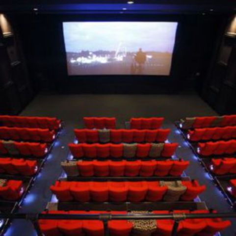

السينما والنقد في مهرجان سينمائي مغربي
إنه المهرجان الوحيد على الأقل في المغرب الذي اختار له كموضوع للاشتغال «السينما في علاقتها بالنقد السينمائي». يتبين ذلك حتى من الاسم الذي رسم به طريقه في رحاب المهرجانات السينمائية المغربية، حيث أسمى نفسه «مهرجان تاصميت للسينما والنقد». هذا المهرجان السينمائي الذي انتهت منذ أيام قليلة دورته الثالثة والتي نظمت تحت شعار «السينما ورهانات التنمية الجهوية» حيث امتدت طيلة ثلاثة أيام.
هذا المهرجان السينمائي الجميل هو من تنظيم «جمعية مهرجان ثقافات وفنون الجبال ببني ملال» ومديرته الأديبة والناقدة السينمائية أمينة الصيباري التي أصرت كعادتها على تحديد أهداف المهرجان في كلمتها الافتتاحية بقولها «مهرجان تاصميت للسينما والنقد في دورته الثالثة يوطن أقدامه في رقعة المهرجانات الوطنية ويعلن عن توجهه الثقافي المزاوج للسينما والنقد «. ومن ثم فهو قد حافظ في صيغته الثالثة هذه، كما في صيغتيه السابقتين بالفعل على تثمين هذه العلاقة بين كل من السينما والنقد السينمائي. في هذا المجال، قدم الملتقى مسابقة رسمية للأفلام السينمائية المغربية. وقد تكونت لجنة التحكيم من كل د.وليد سيف رئيساً وآمال عيوش وسلمى بركاش ود.الحبيب الناصري وسليمان الحقيوي ونورالدين بوليمة أعضاءً. في جانب آخر نظم المهرجان ماستر كلاس خاصة بالنقد مع الناقد السينمائي ادريس القري قدمه المخرج الفنان لحسن زينون وماستر كلاس خاصة بالسينما مع المخرج عبدالرحمان التازي قدمه الناقد السينمائي عمر أيت المختار. وقد تميزتا معاً بحضور وازن للجمهور. كما قام الناقد السينمائي بوشتى فرقزايد بالإشراف على ورشة النقد السينمائي لإنجاز المقال النقدي في مجال السينما.
وقد تكونت لجنة تحكيم المقال النقدي من حسن نرايس رئيساً وعامر الشرقي وفاطمة أبو ناجي والمصطفى أبو الخير وعبد الرحمان محيريق أعضاء. كما تم تكريم كل من الممثلة المصرية المعروفة تيسيير فهمي والممثلة المغربية المتألقة سهام أسيف والناقد السينمائي المغربي أحمد بوغابة. و قد نظمت ضمن أشغال المهرجان ندوة نقدية مهمة، حملت عنوان «السينما ورهانات التنمية الجهوية» قام بتسييرها الكاتب نورالدين محقق وضمت كل من الفنان والمخرج السينمائي لحسن زينون والناقد والباحث الأكاديمي الحبيب ناصري والناقد السينمائي سليمان الحقيوي.
